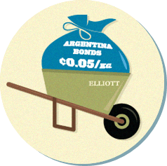
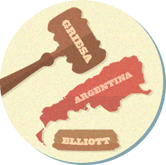

Roadmap to
Argentina's Default
2005 & 2010 - Argentine debt restructuring
Argentina’s crisis in 2001 caused its financial system to collapse - leaving it bankrupt and unable to service its bonds. Between 2005 and 2010, Argentina's Government made arrangements with 92% of bond holders. Some of those who didn't accept the deal started litigation against the country.

2011 - Singer's Vulture Funds Buys Bonds on the Cheap and Sues on the High
Paul Singer's Elliot Management buys huge amounts of bonds cheap from “hold-outs” - bondholders who did not accept the offer of restructuring from Argentina. He then sues for the full amount of the bonds - 1300% the value he bought them for.

2012 - Judge Griesa rules in Elliot's favor
Judge Griesa rules in Elliott's favor - and "puts teeth" in decision - citing on a legal principle called “pari passu” - which requires New York banks who manage the bond payments to hold ransom payments - as “extortion” - to other bond holders who agreed to restructuring until the vultures are paid first.
June 2014 - SCOTUS refuses to hear the case
In June 2014, the Supreme Court of the United States refuses to hear the case. Because of this, Griesa’s sentence is confirmed and the clock starts to run out driving the nation towards default.
July 2014 - A Default is born
With no agreement to pay Vultures - NY banks don't pay other bond holders and Argentina is officially in default.
Read More History >
Even the US department of Justice recognized that adopting the legal theories the Vultures are proposing in the case would imperil sovereign bailout agreements worldwide, negatively impact the global economy, and open the door for a new era of predatory vulture investment.
See the actual Amicus brief filed by the Department of Justice